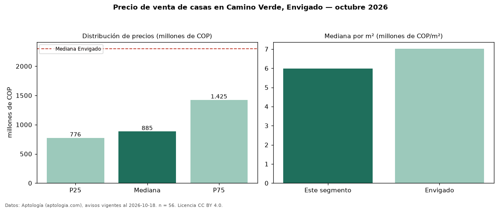

Precio de venta de casas en Camino Verde, Envigado — octubre 2026
Con 56 avisos vigentes, el precio mediano de casas en venta en Camino Verde, Envigado es COP 885 millones. Eso es 62 % por debajo de la mediana de Envigado para casas (COP 2,30 mil millones). Por metro cuadrado, la mediana es COP 5,99 millones/m² (n = 54 avisos con área), 15 % por debajo de Envigado (COP 7,02 millones/m²). Por precio mediano es el puesto 26 de 27 barrios de Envigado con al menos 30 avisos de casas en venta (COP): entre las más económicas. El área mediana anunciada es 156 m². El segmento con más oferta es el de 3 o más habitaciones (52 avisos, mediana COP 885 millones). La administración mediana declarada es COP 445.500 al mes (n = 28). La mitad central de los avisos va de COP 776 millones a COP 1,43 mil millones (razón 1,8), una dispersión moderada. Datos: Aptología (aptologia.com), CC BY 4.0 — https://www.aptologia.com/casas-en-venta/envigado/camino-verde. Archivos: PDF, CSV con las cifras y gráfica PNG.

| Avisos únicos | 56 |
|---|---|
| Percentil 25 | COP 775.500.000 |
| Mediana | COP 885.000.000 |
| Percentil 75 | COP 1.425.000.000 |
| Mediana por m² | COP 5.986.842 |
Fuente: avisos vigentes de portales inmobiliarios recopilados por Aptología, deduplicados (mínimo 30 avisos únicos por celda). Precios pedidos, no cerrados. Fecha: 2026-10-18.